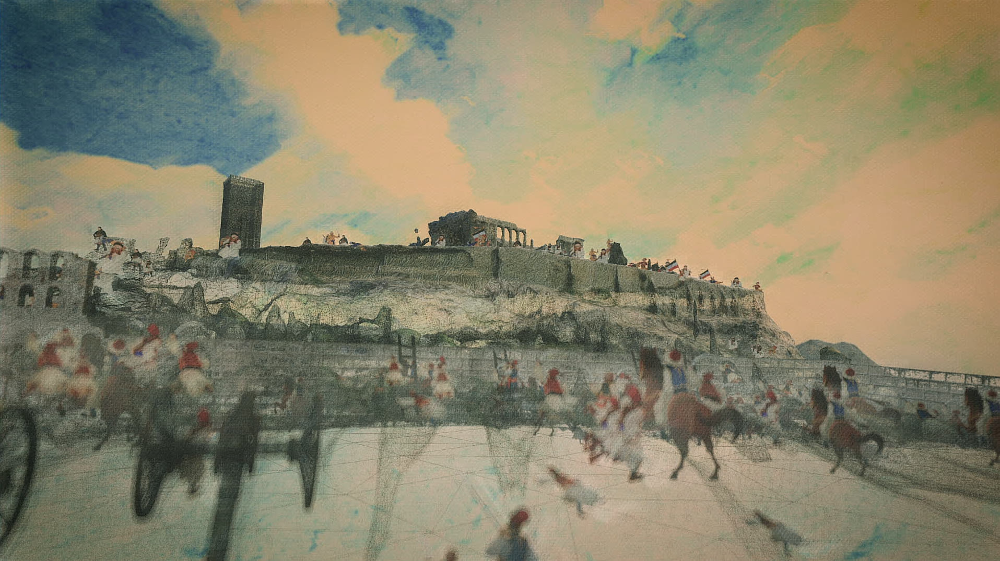
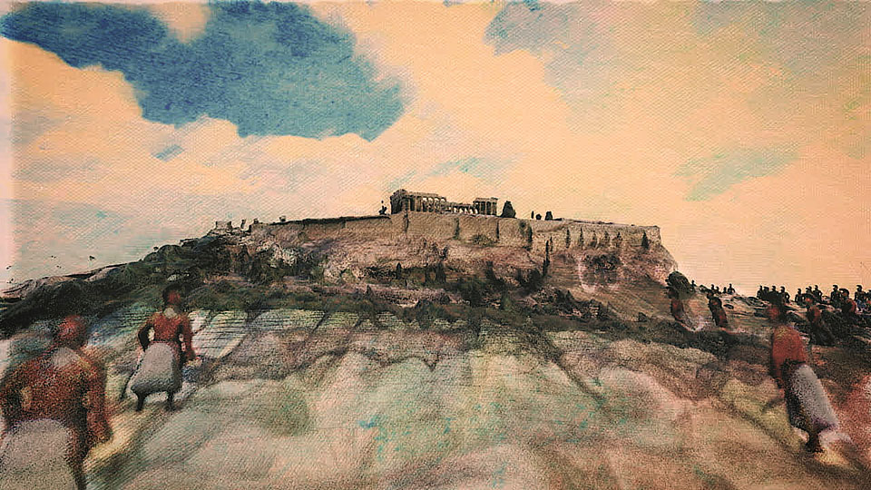
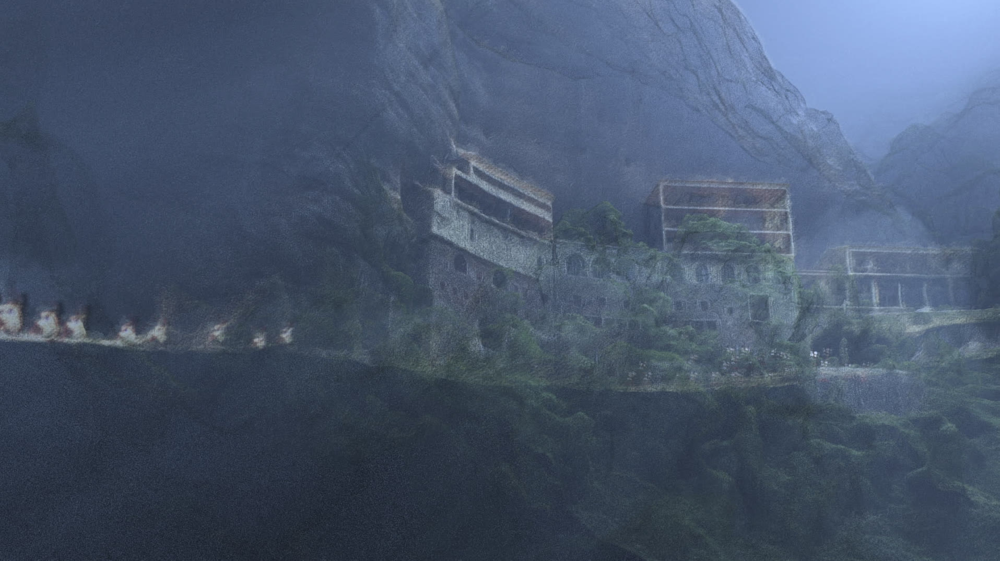
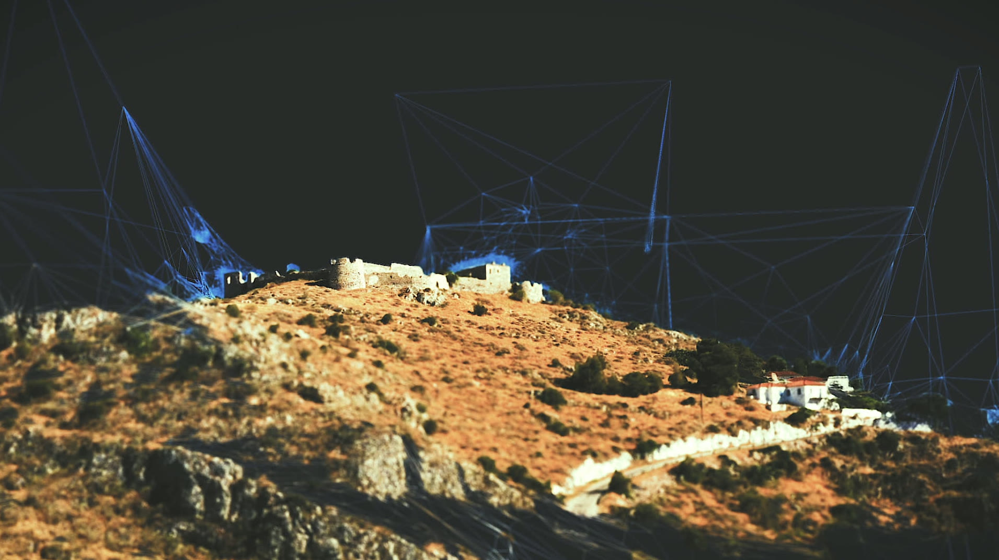

Landmarks of 1821
3D motion graphics for an ERT docu-series, featuring large photogrammetry sets from drone footage and a stylised glitch aesthetic.
With Whitefox Productions we developed a visual language to visualise landscapes and architecture the way they used to be. We used large photogrammetry sets from drone footage; based on the remains of buildings, we recreated and augmented them in 3D using references from the era.

Various landmarks came to life, including the Acropolis, the walls of Thessaloniki, Mesolongi, Mega Spilaio, and Mani.


The visual style carried the noisy digital aesthetic of the reconstruction process itself, a Byzantine approach to depicting characters, and custom drawing effects for a vintage aftertaste.

Produced for ERT, the Greek public broadcaster, as part of a documentary series on the Greek War of Independence.